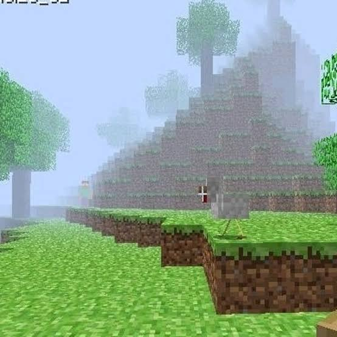
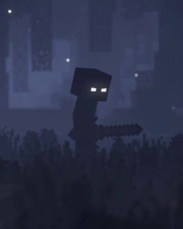

Among all Minecraft stories and myths, none is more famous than Herobrine. For years, players have claimed to see a mysterious character watching them from forests, mountains and caves.
The strange thing about Herobrine is that he looks exactly like Steve, except for one detail — his glowing white eyes.
Who Is Herobrine?
According to the legend, Herobrine appears in singleplayer worlds without warning. Players reported seeing him standing far away before suddenly disappearing.
Many players believed that Herobrine secretly lived inside Minecraft worlds, watching players from the shadows.

Strange Things Players Reported
- ✔ Mysterious white-eyed character sightings
- ✔ Random tunnels underground
- ✔ Strange sand pyramids
- ✔ Missing tree leaves
- ✔ Unexplained fires
- ✔ Weird structures appearing in worlds
- ✔ Footsteps with nobody nearby
- ✔ Creepy cave encounters
Is Herobrine Real?
No. Mojang has confirmed many times that Herobrine was never part of Minecraft.
However, the legend became so popular that millions of players started searching for him, creating videos, mods and stories based on the mystery.

The Internet Legend
As Minecraft became more popular, Herobrine became one of the biggest gaming mysteries ever created.
Many YouTubers uploaded scary videos claiming they had found Herobrine. Mods and custom maps made the legend even more famous.
Why People Still Talk About Him
Even after many years, Herobrine remains one of Minecraft's most iconic myths.
Although he never existed in the game's code, he became a permanent part of Minecraft culture and internet history.
Final Verdict
Herobrine is not real, but his legend continues to inspire players around the world.
Status: Community Myth 👻
Back To Hero HubCredits: Herobrine is a community-created Minecraft legend. Minecraft belongs to Mojang Studios.